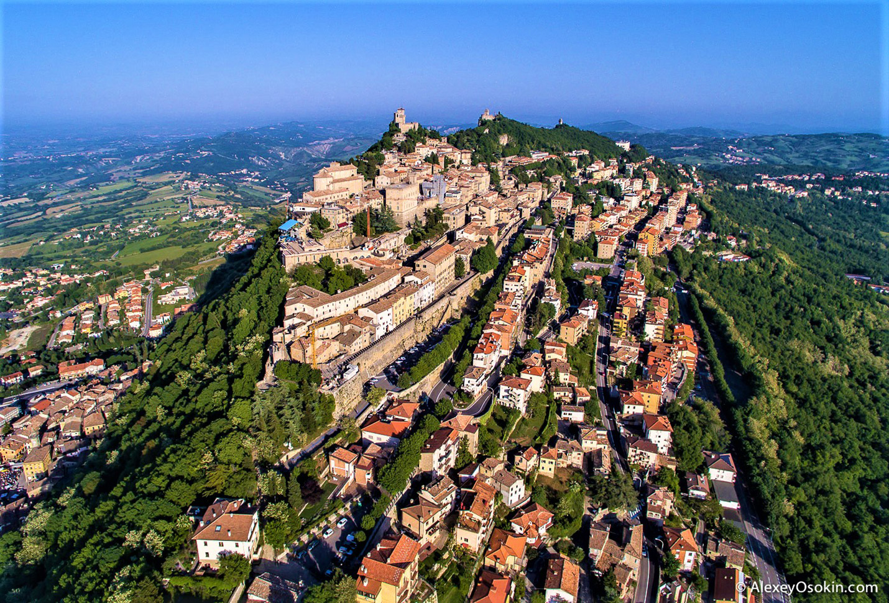

Місце народження: м. Фастів
Освіта: Пилипівська ЗОШ І-ІІІ ст., НТУУ "КПІ ім. Сікороського" магістр менеджменту міжнародного бізнесу
Сучасне місто Сан-Марино розташоване на терасах гори Монте-Титано. У ньому проживає близько чверті всього населення країни — понад 4 тис. чоловік. Більшість столичних мешканців — сан-маринці, але є й іммігранти. Італійська мова слугує у спілкуванні, а латинська є офіційною. Віросповідання — католицизм.
